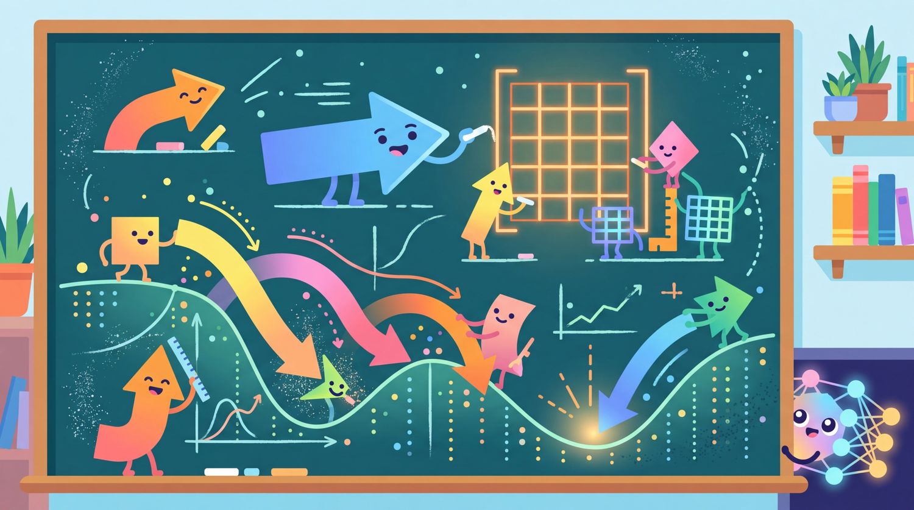

Mathematics is the language in which neural networks think. You do not need to be fluent, but you must be conversational.
Tensor AI Agent
This appendix collects the mathematical background you will encounter throughout the textbook. It is not a substitute for a full course in linear algebra or probability; rather, it is a targeted reference that connects each concept directly to its role in large language models. If you are comfortable with matrix multiplication and conditional probability, you can skim freely. If these topics feel unfamiliar, work through the examples here before diving into the transformer chapters.
A.1 Linear Algebra Essentials
Linear algebra provides the data structures and operations at the heart of every neural network. Tokens become vectors, layers become matrices, and the entire forward pass of a transformer is a sequence of linear transformations interleaved with nonlinearities.
Vectors and Vector Spaces
A vector is an ordered list of numbers. In LLM contexts, a word embedding is a vector of, say, 768 dimensions. Each dimension captures some learned feature of the word's meaning, though individual dimensions are rarely interpretable on their own. Code Fragment A.1 below puts this into practice.
# NumPy computation
# Key operations: embedding lookup
import numpy as np
# A simple 4-dimensional embedding vector
word_vector = np.array([0.23, -0.87, 1.42, 0.05])
# Vector addition: combining two representations
context_vector = np.array([0.10, 0.30, -0.50, 0.80])
combined = word_vector + context_vector # element-wise additionKey properties of vectors you will encounter repeatedly:
- Magnitude (norm): The length of a vector. The L2 norm is $||v|| = sqrt(v_1^2 + v_2^2 + ... + v_n^2)$. Normalizing vectors to unit length is common before computing cosine similarity.
- Dot product: $a \cdot b = a_1*b_1 + a_2*b_2 + ... + a_n*b_n$. This operation is the backbone of attention scores in transformers. Two vectors with a high dot product point in similar directions.
- Cosine similarity: $cos( \theta ) = (a \cdot b) / (||a|| * ||b||)$. By dividing out the magnitudes, cosine similarity measures direction alignment regardless of vector length. This is how embedding search systems compare query vectors to document vectors.
The attention mechanism in transformers computes $score(Q, K) = Q \cdot K^T / sqrt(d_k)$. This is just a scaled dot product. When a query vector and a key vector point in similar directions, their dot product is large, which means the model "pays more attention" to that key's corresponding value. The entire magic of attention reduces to geometry.
Matrices and Matrix Multiplication
A matrix is a 2D grid of numbers. In neural networks, weight matrices transform one vector space into another. If your input is a 768-dimensional vector and you multiply it by a 768×3072 matrix, you get a 3072-dimensional vector. This is exactly what happens in the feed-forward layers of a transformer.
This formula describes a linear layer: input $X$ (a batch of vectors) is multiplied by weight matrix $W$, then bias vector $b$ is added. Nearly every layer in a neural network begins with this operation. Code Fragment A.2 below puts this into practice.
# Matrix multiplication in NumPy
X = np.random.randn(4, 768) # batch of 4 tokens, each 768-dim
W = np.random.randn(768, 3072) # weight matrix
b = np.random.randn(3072) # bias vector
Y = X @ W + b # shape: (4, 3072)
# The @ operator is Python's matrix multiplicationTranspose and Symmetry
The transpose of a matrix flips rows and columns: if $A$ has shape (m, n), then $A^T$ has shape (n, m). In attention, we compute $Q \cdot K^T$ because Q has shape (seq_len, d_k) and K has the same shape; transposing K to (d_k, seq_len) makes the multiplication produce a (seq_len, seq_len) attention matrix.
Eigenvalues and Eigenvectors
An eigenvector of a matrix $A$ is a vector $v$ such that multiplying by the matrix merely scales it:
The scalar $\lambda$ is the eigenvalue. While you will not compute eigenvalues during routine LLM work, they appear in several important contexts: understanding the stability of training (exploding or vanishing gradients), principal component analysis for visualizing embedding spaces, and analyzing the rank of weight matrices (relevant for LoRA and low-rank approximations in Chapter 14).
LoRA (Low-Rank Adaptation) freezes the original weight matrix and adds a small trainable update: $W' = W + B \cdot A$, where $B$ is (d, r) and $A$ is (r, d) with rank $r << d$. This works because weight updates during fine-tuning tend to live in a low-dimensional subspace, a fact rooted in the eigenstructure of the update matrices.
A.2 Probability and Statistics
Language models are, at their core, probability machines. A transformer predicts the next token by outputting a probability distribution over the entire vocabulary. Understanding probability is therefore not optional; it is the lens through which every LLM output must be interpreted.
Probability Distributions
A probability distribution assigns a probability to every possible outcome such that all probabilities sum to 1. For a language model with a vocabulary of 50,000 tokens, the output at each step is a distribution over 50,000 possibilities. Code Fragment A.3 below puts this into practice.
# PyTorch implementation
# Key operations: softmax normalization, structured logging
import torch
import torch.nn.functional as F
# Raw model outputs (logits) for a vocabulary of 5 tokens
logits = torch.tensor([2.0, 1.0, 0.5, -1.0, 0.1])
# Convert to probabilities using softmax
probs = F.softmax(logits, dim=-1)
# tensor([0.4466, 0.1642, 0.0996, 0.0222, 0.0667])
# All probabilities sum to 1.0The softmax function is the bridge between raw model scores (logits) and probabilities:
Conditional Probability and Bayes' Theorem
Conditional probability is the probability of an event given that another event has occurred: $P(A | B) = P(A \cap B) / P(B)$. Language modeling is fundamentally about conditional probability: what is the probability of the next token given all previous tokens?
Bayes' theorem lets us reverse the direction of conditioning:
This appears in retrieval-augmented generation (RAG), where we want to find documents relevant to a query, and in classification tasks where we update beliefs about a label given observed features.
Common Distributions
| Distribution | Type | LLM Relevance |
|---|---|---|
| Categorical | Discrete | The output of softmax; used to sample the next token |
| Gaussian (Normal) | Continuous | Weight initialization, noise in diffusion models, VAE latent spaces |
| Uniform | Both | Random sampling baselines, certain initialization schemes |
| Bernoulli | Discrete | Dropout masks (each neuron kept with probability p) |
Expected Value and Variance
The expected value (mean) of a distribution tells you the average outcome: $E[X] = \Sigma x_i \cdot P(x_i)$. The variance measures spread: $Var(X) = E[(X - E[X])^2]$. Layer normalization in transformers works by subtracting the mean and dividing by the standard deviation (the square root of variance), ensuring that activations stay in a well-behaved range throughout the network.
When generating text, the temperature parameter reshapes the probability distribution. Given logits $z$, we compute $\operatorname{softmax}(z / T)$. A temperature of 1.0 is the default distribution. Temperatures below 1.0 make the distribution sharper (more confident), while temperatures above 1.0 flatten it (more random). At $T \rightarrow 0$, the model always picks the highest-probability token (greedy decoding). At $T \rightarrow \infty$, all tokens become equally likely.
The Chain Rule of Probability and Autoregressive Generation
The chain rule of probability decomposes a joint distribution into a product of conditionals:
This identity is the mathematical foundation of autoregressive language models. When a transformer generates a sentence, it does not produce the entire sequence at once. It predicts one token at a time, conditioning on all previously generated tokens. The probability of the full sequence is the product of each conditional prediction. When papers report "log-likelihood" of a text, they mean the sum of the log-probabilities at each step: $\log P(\text{text}) = \sum_t \log P(x_t \mid x_{<t})$. The cross-entropy training objective in Chapter 06 directly optimizes this decomposition.
Maximum Likelihood Estimation
Maximum likelihood estimation (MLE) is the principle behind training almost every language model. Given a dataset of text sequences, MLE asks: what model parameters $\theta$ make the observed data most probable?
Taking the log converts the product into a sum (the log-likelihood), which is numerically more stable and easier to optimize with gradient descent. Minimizing cross-entropy loss is equivalent to maximizing log-likelihood: the standard training loop in Section 6.2 and Section 14.1 is doing MLE. When a model "overfits," it has found parameters that maximize the likelihood of the training data at the expense of generalization.
Sampling Strategies: Top-k and Nucleus (Top-p)
Raw sampling from a model's full distribution often produces incoherent text because low-probability tokens accumulate enough mass to be selected occasionally. Two truncation strategies address this:
- Top-k sampling: Keep only the $k$ highest-probability tokens, set the rest to zero, and renormalize. With $k = 50$, the model chooses among its 50 best guesses. The limitation is that the right $k$ varies by context: after "The capital of France is" only one token is sensible, but after "I feel" many continuations are valid.
- Nucleus (top-p) sampling: Instead of a fixed count, keep the smallest set of tokens whose cumulative probability exceeds a threshold $p$ (typically 0.9 or 0.95). This adapts the effective vocabulary size to the model's confidence at each step.
These strategies are covered in depth with code examples in Section 8.1. Understanding them requires only the probability concepts above: truncating and renormalizing a distribution.
Monte Carlo Estimation
Monte Carlo methods estimate expected values by averaging samples. If you cannot compute $E_{x \sim P}[f(x)]$ analytically (because the distribution is too complex), you draw $N$ samples and approximate:
This principle underpins several LLM techniques. In RLHF (Section 17.1), the expected reward under the policy is estimated by generating multiple responses and averaging their rewards. In GRPO, a group of sampled completions provides the baseline for advantage estimation. In evaluation, running a model on a sample of test cases and computing average scores is a Monte Carlo estimate of the model's true performance on the full distribution.
Confidence Intervals and Statistical Testing for Evaluation
When comparing two models on a benchmark, a 2% accuracy difference might be meaningful or just noise. Confidence intervals quantify this uncertainty. For a metric computed over $N$ test examples with sample mean $\bar{x}$ and standard deviation $s$, the 95% confidence interval is approximately:
If two models' confidence intervals do not overlap, the difference is statistically significant at the 95% level. For LLM evaluation (Section 29.1), this is essential: always report confidence intervals alongside benchmark scores. A paired bootstrap test or Wilcoxon signed-rank test provides a more rigorous comparison when you have per-example scores from both models. The evaluation methodology in Section 29.14 applies these concepts to benchmarking.
Many published model comparisons report only point estimates ("Model A achieves 87.3%, Model B achieves 85.1%") without confidence intervals or significance tests. A difference of 2.2 percentage points on a 100-example test set has a confidence interval of roughly ±6%, making the difference meaningless. On a 10,000-example test set, the same 2.2% gap would be highly significant. Always consider sample size before concluding that one model outperforms another.
A.3 Calculus for Machine Learning
Calculus provides the machinery for training neural networks. The entire training loop, in which a model's weights are adjusted to minimize a loss function, rests on computing gradients and following them downhill.
Derivatives and Gradients
A derivative tells you how fast a function's output changes when you nudge its input. For a function $f(x)$, the derivative $f'(x)$ or $df/dx$ is the slope of the function at point $x$.
When a function has many inputs (as a loss function that depends on millions of weights), we compute partial derivatives with respect to each input. The collection of all partial derivatives is called the gradient:
The gradient points in the direction of steepest increase. To minimize the loss, we move in the opposite direction.
Gradient Descent
The weight update rule for gradient descent is remarkably simple:
Here, $\eta$ (eta) is the learning rate, a small positive number that controls step size. Too large, and training diverges; too small, and convergence is painfully slow. Finding the right learning rate (and scheduling it to change over time) is one of the most important hyperparameter decisions in LLM training. Code Fragment A.4 below puts this into practice.
# Simplified gradient descent in PyTorch
import torch
# Suppose we have a simple loss function: L = (prediction - target)^2
w = torch.tensor([1.0], requires_grad=True)
target = torch.tensor([3.0])
learning_rate = 0.1
for step in range(10):
prediction = w * 2.0 # simple linear model
loss = (prediction - target) ** 2
loss.backward() # compute gradient
with torch.no_grad():
w -= learning_rate * w.grad # update weight
w.grad.zero_() # reset gradient for next stepThe Chain Rule and Backpropagation
Neural networks are compositions of many functions: the output of one layer feeds into the next. To compute how the loss depends on a weight deep in the network, we need the chain rule:
Each factor in this chain corresponds to one layer. Backpropagation is simply the efficient, automated application of the chain rule, working backwards from the loss to compute gradients for every weight in the network.
If the chain rule multiplies many factors less than 1, the gradient shrinks exponentially as it flows backward through layers (the vanishing gradient problem). If factors exceed 1, gradients explode. Techniques like residual connections (adding the input of a layer to its output), layer normalization, and careful initialization all exist to keep this product near 1. The transformer architecture uses residual connections around every sub-layer, which is one reason it can be trained to hundreds of layers.
Common Activation Functions and Their Derivatives
| Function | Formula | Derivative | Used In |
|---|---|---|---|
| ReLU | max(0, x) | 0 if x < 0, else 1 | Early transformers, CNNs |
| GELU | x · Φ(x) | Smooth approximation | BERT, GPT-2+ |
| SiLU (Swish) | x · σ(x) | Smooth, non-monotonic | LLaMA, modern LLMs |
| Sigmoid | 1 / (1 + exp(-x)) | σ(x)(1 - σ(x)) | Gating mechanisms |
A.4 Information Theory
Information theory, pioneered by Claude Shannon in 1948, gives us a mathematical framework for measuring uncertainty and the "surprise" in a message. These concepts are deeply woven into how we train and evaluate language models.
Entropy
Entropy measures the average amount of surprise (or information) in a probability distribution:
A distribution where one outcome has probability 1.0 has zero entropy (no surprise). A uniform distribution over many outcomes has maximum entropy (maximum uncertainty). When a language model is confident about the next token, the entropy of its output distribution is low. When it is uncertain, entropy is high. Code Fragment A.5 below puts this into practice.
# implement entropy
# Key operations: results display, structured logging
import numpy as np
def entropy(probs):
"""Compute entropy of a probability distribution."""
# Filter out zero probabilities to avoid log(0)
probs = probs[probs > 0]
return -np.sum(probs * np.log2(probs))
# Confident distribution: low entropy
confident = np.array([0.9, 0.05, 0.03, 0.02])
print(f"Confident entropy: {entropy(confident):.3f} bits") # ~0.57
# Uncertain distribution: high entropy
uncertain = np.array([0.25, 0.25, 0.25, 0.25])
print(f"Uncertain entropy: {entropy(uncertain):.3f} bits") # 2.0Cross-Entropy
Cross-entropy measures how well a predicted distribution $Q$ matches a true distribution $P$:
This is the standard loss function for training language models. The "true distribution" $P$ is the one-hot vector for the actual next token (probability 1 for the correct token, 0 for everything else). The predicted distribution $Q$ is the model's softmax output. Minimizing cross-entropy loss means making the model assign higher probability to the correct next token.
Perplexity, the standard metric for language models, is simply $2^{\text{cross-entropy}}$ (or $e^{\text{cross-entropy}}$ if using natural log). A perplexity of 20 means the model is, on average, as uncertain as if it were choosing uniformly among 20 tokens. Lower perplexity means better predictions. When papers report that a model achieves "perplexity 8.5 on WikiText-103," they are describing the exponential of the average cross-entropy loss on that dataset.
KL Divergence
The Kullback-Leibler divergence measures how one probability distribution differs from another:
KL divergence has a critical property: it is always non-negative, and equals zero only when $P = Q$. However, it is not symmetric: $D_{KL}(P || Q) \neq D_{KL}(Q || P)$.
In LLM work, KL divergence appears in several important places: Code Fragment A.6 below puts this into practice.
- Knowledge distillation (Chapter 15): The student model is trained to minimize the KL divergence between its output distribution and the teacher's output distribution.
- RLHF and DPO (Chapter 16): A KL penalty prevents the fine-tuned model from drifting too far from the base model, preserving general capabilities while aligning behavior.
- Variational methods: The evidence lower bound (ELBO) involves KL divergence between approximate and true posterior distributions.
# PyTorch implementation
# Key operations: results display, structured logging
import torch
import torch.nn.functional as F
# KL divergence between two distributions
p = torch.tensor([0.4, 0.3, 0.2, 0.1]) # "true" distribution
q = torch.tensor([0.25, 0.25, 0.25, 0.25]) # predicted distribution
# PyTorch's kl_div expects log-probabilities for the input
kl = F.kl_div(q.log(), p, reduction='sum')
print(f"KL(P || Q) = {kl.item():.4f}") # ~0.0849Mutual Information
Mutual information measures how much knowing one variable tells you about another: $I(X; Y) = H(X) - H(X | Y)$. It is symmetric, unlike KL divergence. In NLP, mutual information can quantify how much a word in one position tells you about a word in another position, and it has been used to analyze what transformers learn about linguistic structure.
Claude Shannon estimated the entropy of English at about 1.0 to 1.5 bits per character by having people guess the next letter in a text. Modern language models, with their vast training data and billions of parameters, achieve cross-entropy rates that approach this fundamental limit. In a sense, LLMs are playing Shannon's guessing game at superhuman scale.
A.5 Connecting the Pieces
Every concept in this appendix appears in the transformer architecture and its training. Here is how they fit together in a single forward pass and weight update:
- Embedding lookup converts token IDs to vectors (linear algebra).
- Self-attention computes dot products between query and key vectors, applies softmax to get attention weights (probability), and takes a weighted sum of value vectors (linear algebra).
- Feed-forward layers apply matrix multiplications followed by activation functions (linear algebra, calculus).
- Output projection and softmax produce a probability distribution over the vocabulary (probability).
- Cross-entropy loss compares the predicted distribution to the true next token (information theory).
- Backpropagation computes gradients of the loss with respect to every weight (calculus, chain rule).
- Gradient descent updates the weights to reduce the loss (calculus, optimization).
You do not need to compute these operations by hand. PyTorch and similar frameworks handle the gradient calculations automatically. But understanding what happens under the hood gives you the ability to diagnose problems (why is my loss NaN?), interpret research papers, and make informed decisions about architecture and hyperparameter choices. The mathematics here is the shared vocabulary of the field.
Quick Reference Summary
- Dot product ($a \cdot b$): Measures similarity between vectors; the core of attention.
- Matrix multiplication ($Y = XW + b$): Every linear layer in a neural network.
- Softmax: Converts logits to probabilities; ensures outputs sum to 1.
- Gradient ($\nabla L$): Direction of steepest increase of the loss; we go the opposite way.
- Chain rule: Enables backpropagation through deep networks.
- Cross-entropy: The loss function for language modeling.
- KL divergence: Measures distribution mismatch; used in distillation and alignment.
- Perplexity = $\exp(cross-entropy)$: The standard evaluation metric for language models.
What Comes Next
Continue to Appendix B: ML Essentials Quick Reference for the next reference appendix in this collection.
Strang, G. (2016). Introduction to Linear Algebra, 5th Edition. Wellesley-Cambridge Press.
The standard reference for linear algebra with excellent geometric intuition.
Goodfellow, I., Bengio, Y., and Courville, A. (2016). Deep Learning. MIT Press.
Chapters 2 through 4 provide a thorough treatment of linear algebra, probability, and numerical computation for deep learning.
3Blue1Brown (2016). Essence of Linear Algebra. YouTube series.
Outstanding visual explanations of vectors, matrices, eigenvalues, and transformations.
Shannon, C. E. (1948). "A Mathematical Theory of Communication." Bell System Technical Journal, 27(3), 379-423.
The founding paper of information theory. Still remarkably readable.